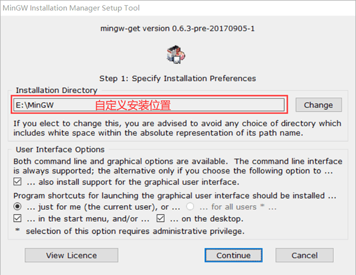
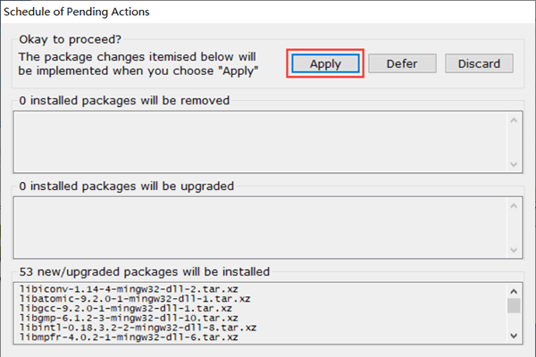
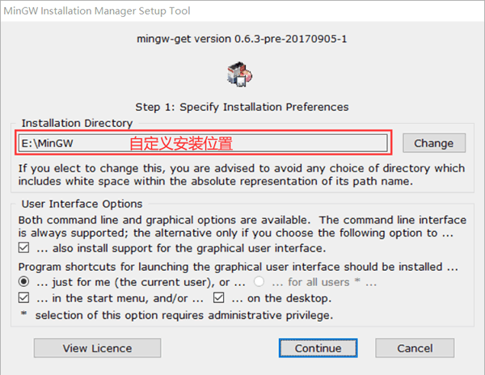
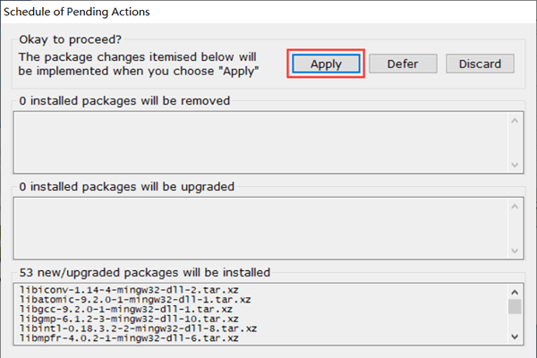

首页 > 编程笔记
MinGW下载和安装教程
要知道，GCC 官网提供的 GCC 编译器是无法直接安装到 Windows 平台上的，如果我们想在 Windows 平台使用 GCC 编译器，可以安装 GCC 的移植版本。
目前适用于 Windows 平台、受欢迎的 GCC 移植版主要有 2 种，分别为 MinGW 和 Cygwin。其中，MinGW 侧重于服务 Windows 用户可以使用 GCC 编译环境，直接生成可运行 Windows 平台上的可执行程序，相比后者体积更小，使用更方便；而 Cygwin 则可以提供一个完整的 Linux 环境，借助它不仅可以在 Windows 平台上使用 GCC 编译器，理论上可以运行 Linux 平台上所有的程序。
1) 打开 MinGW 官网（点击即可进入官网），下载 MinGW 安装包。

图 1 官网下载MinGW
2) 下载完成后，会得到一个名为 mingw-get-setup.exe 的安装包，双击打开它，可以看到如下的对话框：

图 2 开始安装 MinGW
3) 直接点击“Install”，进入下面的对话框：

图 3 自定义 MinGW 的安装位置
4) 读者可根据自己操作系统的实际情况，自定义 MinGW 的安装位置（例如我选择将其安装到 E 盘），然后点击“continue”，进入下面的对话框：

图 4 下载并安装 MinGW 配置器
5) 进入安装 MinGW 配置器的界面，读者耐心等待安装完成（显示 100%）即可。安装完成之后，我们会得到一个名为 "MinGW Installer Manager" 的软件，借助它，我们可以随时根据需要修改 GCC 编译器的配置。点击“continue”,会自动弹出配置界面，如下所示：

图 5 配置 GCC 编译器
为使 GCC 同时支持编译 C 语言和 C++，需勾选图中标注的 2 项。我们知道，GCC 还支持其它编程语言，读者可借助此配置器，随时实际需要安装自己需要的编译环境。勾选完成后，在菜单栏中选择

图 6 开始安装选中的编译环境
选择“Apply”。然后耐心等待，直至安装成功，即可关闭此界面。注意，整个安装过程中可能会提示某些组件下载失败，但没关系，后续需要时，可以通过 MinGw Installer（图 4 所示）安装界面中的 “All Packages”选项中，手动选择指定的安装包进行安装。
6) 在安装完成的基础上，我们需要手动配置 PATH 环境变量。依次

图 7 配置 PATH 环境变量
7) 由此，打开命令行窗口（通过在搜索栏中执行 cmd 指令即可），输入

图 8 成功安装 GCC 编译环境
这里以运行一个 C 语言程序为例（存储路径为：D:\demo.c）：
目前适用于 Windows 平台、受欢迎的 GCC 移植版主要有 2 种，分别为 MinGW 和 Cygwin。其中，MinGW 侧重于服务 Windows 用户可以使用 GCC 编译环境，直接生成可运行 Windows 平台上的可执行程序，相比后者体积更小，使用更方便；而 Cygwin 则可以提供一个完整的 Linux 环境，借助它不仅可以在 Windows 平台上使用 GCC 编译器，理论上可以运行 Linux 平台上所有的程序。
本节要重点给大家介绍的是 MinGw 的安装和使用。MinGw 全称 Minimalist GNU for Windows，应用于 Windows 平台，可以为我们提供一个功能有限的 Linux 系统环境以使用一些 GNU 工具，比如 GCC 编译器、gawk、bison 等等。如果读者仅需要在 Windows 平台上使用 GCC，可以使用 MinGW 或者 Cygwin；除此之外，如果读者还有更高的需求（例如运行 POSIX 应用程序），就只能选择安装 Cygwin。
MinGW的安装
相比在 Linux 平台上安装 GCC 编译环境，在 Windows 平台上安装 MinGW 是比较简单的，只需经历以下几个过程。1) 打开 MinGW 官网（点击即可进入官网），下载 MinGW 安装包。
图 1 官网下载MinGW
2) 下载完成后，会得到一个名为 mingw-get-setup.exe 的安装包，双击打开它，可以看到如下的对话框：
图 2 开始安装 MinGW
3) 直接点击“Install”，进入下面的对话框：

图 3 自定义 MinGW 的安装位置
4) 读者可根据自己操作系统的实际情况，自定义 MinGW 的安装位置（例如我选择将其安装到 E 盘），然后点击“continue”，进入下面的对话框：
图 4 下载并安装 MinGW 配置器
5) 进入安装 MinGW 配置器的界面，读者耐心等待安装完成（显示 100%）即可。安装完成之后，我们会得到一个名为 "MinGW Installer Manager" 的软件，借助它，我们可以随时根据需要修改 GCC 编译器的配置。点击“continue”,会自动弹出配置界面，如下所示：
图 5 配置 GCC 编译器
为使 GCC 同时支持编译 C 语言和 C++，需勾选图中标注的 2 项。我们知道，GCC 还支持其它编程语言，读者可借助此配置器，随时实际需要安装自己需要的编译环境。勾选完成后，在菜单栏中选择
Installation -> Apply Changes，弹出如下对话框：

图 6 开始安装选中的编译环境
选择“Apply”。然后耐心等待，直至安装成功，即可关闭此界面。注意，整个安装过程中可能会提示某些组件下载失败，但没关系，后续需要时，可以通过 MinGw Installer（图 4 所示）安装界面中的 “All Packages”选项中，手动选择指定的安装包进行安装。
6) 在安装完成的基础上，我们需要手动配置 PATH 环境变量。依次
右击计算机（我的电脑） -> 属性 -> 高级系统设置 -> 环境变量，建议读者在当前用户的 PATH 环境变量中增加 MinGW 的安装路径，例如我将其安装到了E:\MinGW文件夹中，因此 PATH 环境变量的设置如下：
图 7 配置 PATH 环境变量
7) 由此，打开命令行窗口（通过在搜索栏中执行 cmd 指令即可），输入
gcc -v指令，如果输出 GCC 编译器的具体信息，则表示安装成功，例如：
图 8 成功安装 GCC 编译环境
MinGW的使用
通过上面的安装，我们就可以在当前 Windows 平台上编译、运行 C 或者 C++ 程序了。这里以运行一个 C 语言程序为例（存储路径为：D:\demo.c）：
#include <stdio.h>
#include <stdlib.h>
int main(){
printf("Hello, World!");
system("pause");
return 0;
}
在此基础上，在命令行窗口中执行如下指令：
C:\Users\mengma>gcc D:\demo.c -o D:\demo.exe
其会在 D 盘生成一个 demo.exe 可执行文件，找到该文件并双击，即可看到程序的执行结果：Hello, World!
关注公众号「站长严长生」，在手机上阅读所有教程，随时随地都能学习。内含一款搜索神器，免费下载全网书籍和视频。

微信扫码关注公众号